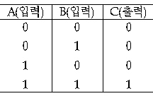
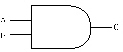
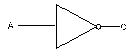
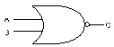
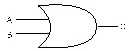
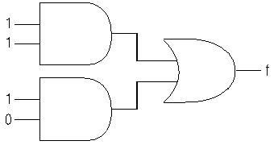
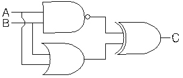
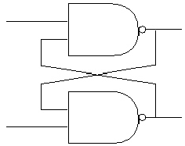
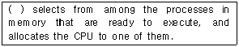
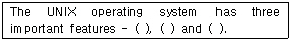

정보처리기능사 (2003-07-20 기출문제)
1과목: 전자 계산기 일반
1. 연산의 중심이 되는 레지스터(Register)는?
- Flip Flop
- General Register
- Address Register
- Accumulator
(정답률: 67%)

2. 다음 진리표에 해당하는 GATE는?





(정답률: 83%)
3. 다음 블록화 레코드에서 블록화 인수는?
- 1
- 3
- 4
- 2
(정답률: 88%)
4. 착오(Error) 검출은 물론 교정까지 가능한 코드는?
- 8 - 4 - 2 -1Code
- 액세스 3코드(Access 3 Code)
- 해밍 코드(Hamming Code)
- 죤슨 코드(Johnson Code)
(정답률: 90%)
5. 다음 논리회로에서 출력 f의 값은?

- 1
- 2
- 1/2
- 0
(정답률: 88%)
6. 연산자의 기능과 거리가 먼 것은?
- 함수연산 기능
- 제어 기능
- 주소지정 기능
- 입·출력 기능
(정답률: 62%)
7. 현재 실행중인 명령어를 기억하고 있는 제어장치 내의 레지스터는?
- 누산기(Accumulator)
- 명령어 레지스터
- 인덱스 레지스터
- 메모리 레지스터
(정답률: 75%)
8. 레지스터에 새로운 데이터를 전송하면 먼저 있던 내용은 어떻게 되는가?
- 먼저 내용은 다른 곳으로 전송되고 새로운 내용만 기억된다.
- 기억된 내용에 아무런 변화가 없다.
- 먼저 내용은 지워지고 새로운 내용만 기억된다.
- 누산기(Accumulator)에서는 덧셈이 이루어 진다.
(정답률: 79%)
9. 일반적으로 Full Word는 몇 bit인가?
- 16
- 32
- 8
- 64
(정답률: 47%)
10. 10진수 32를 2진수로 변환할 경우 올바른 것은?
- 100001
- 100000
- 110000
- 101010
(정답률: 67%)
11. 2개의 조건이 동시에 만족해야 출력하는 논리 연산자는?
- AND
- NAND
- NOT
- OR
(정답률: 83%)
12. 명령(Instruction)어의 내용을 가지고 있는 것은?
- 명령 Register
- 누산기(Accumulator)
- Memory Register
- Index Register
(정답률: 78%)
13. Accumulator(누산기)에 관한 설명으로 가장 적절한 것은?
- 연산명령의 순서를 기억하는 장치이다.
- 연산부호를 해독하는 장치이다.
- 연산명령이 주어지면 연산준비를 하는 장소이다.
- 레지스터의 일종으로 산술연산 및 논리연산의 결과를 일시 기억하는 장치이다.
(정답률: 75%)
14. 입·출력장치의 동작 속도와 전자계산기 내부의 동작 속도를 맞추는데 사용되는 레지스터는?
- 시프트 레지스터(Shift Register)
- 시퀀스 레지스터(Sequence Register)
- 어드레스 레지스터(Address Register)
- 버퍼 레지스터(Buffer Register)
(정답률: 78%)
15. 그림과 같은 논리회로의 출력 C는 얼마인가?(단, A = 1, B = 1 이다.)

- 1
- 0
- 01
- 10
(정답률: 67%)
16. 다음의 논리회로는 무슨 회로인가?

- NAND 회로
- Flip-Flop 회로
- Half adder 회로
- Full adder 회로
(정답률: 61%)
17. 8진수 (234)8을 16진수로 바르게 표현한 것은?
- AD
- 9C
- 11B
- BC
(정답률: 77%)
18. 인스트럭션 레지스터(Instruction Register), 부호기, 번지 해독기, 제어 계수기 등과 관계 있는 장치는?
- 입력장치
- 제어장치
- 연산장치
- 기억장치
(정답률: 66%)
19. 연산작업을 할 때, 연산의 중간 결과나 데이터 저장시 레지스터를 사용하는 주된 이유는?
- 기억 장소를 절약하기 위하여
- 연산 속도 향상을 위하여
- 연산의 정확성을 위하여
- 인터럽트 요청을 방지하기 위하여
(정답률: 74%)
20. 오퍼랜드(Operand)자체가 연산대상이 되는 주소 지정 방식은?
- 묵시적주소지정(Implied Addressing)
- 간접주소지정(Indirect Addressing)
- 즉시주소지정(Immediate Addressing)
- 직접주소지정(Direct Addressing)
(정답률: 47%)
2과목: 패키지 활용
21. Windows용 프리젠테이션에서 화면 전체를 전환하는 단위를 의미하는 것은?
- 개요
- 개체
- 스크린 팁
- 쪽(슬라이드)
(정답률: 84%)
22. Windows용 스프레드시트의 기능과 거리가 먼 것은?
- 정렬 기능
- 동영상 처리 기능
- 자동 계산 기능
- 그래프 표현기능
(정답률: 82%)
23. 데이터베이스 시스템의 구성 요소로 가장 적절한 것은?
- 개념 스키마, 핵심 스키마, 구체적 스키마
- 외부 스키마, 핵심 스키마, 내부 스키마
- 개념 스키마, 구체적 스키마, 응용 스키마
- 외부 스키마, 개념 스키마, 내부 스키마
(정답률: 87%)
24. 데이터베이스에서 사용되는 용어 중 데이터의 크기가 작은 것에서 부터 큰 순서로 이루어진 것은?
- 데이터 → 필드 → 레코드 → 파일
- 데이터 → 레코드 → 필드 → 파일
- 데이터 → 레코드 → 파일 → 필드
- 데이터 → 필드 → 파일 → 레코드
(정답률: 55%)
25. 의미를 가진 정보의 기본단위로 데이터베이스 관리 시스템에서 처리의 최소 단위는?
- 파일
- 필드
- 테이블
- 레코드
(정답률: 42%)
26. SQL의 SELECT 문에서 특정열의 값을 기준으로 정렬할 때 사용하는 절은?
- ORDER TO절
- ORDER BY절
- SORT BY절
- SORT절
(정답률: 80%)
27. 하나의 테이블에 한 행의 데이터를 등록하는 방법으로 옳은 것은?
- CREATE TABLE 고객 (계좌번호 NUMBER (3,0), 이름 VARCHAR2 (8), 금액 NUMBER(5,0)) ;
- SELECT * FROM 고객 ;
- INSERT INTO 고객 (계좌번호, 이름, 금액) VALUES(111, 홍길동, 5000) ;
- UPDATE 고객 SET 금액 = 10000 WHERE 이름 = 홍길동 ;
(정답률: 51%)
28. 데이터베이스의 생성과 운영에 대한 모든 책임과 권한을 가지고 있는 사람은?
- 응용 프로그래머
- 프로그램 사서
- 일반 사용자
- 데이터베이스 관리자
(정답률: 85%)
29. 데이터베이스 관리 시스템(DBMS)의 필수 기능에 해당하지 않는 것은?
- 제어기능
- 처리기능
- 조작기능
- 정의기능
(정답률: 70%)
30. SQL에서 데이터 검색을 할 경우 검색된 결과값의 중복 레코드를 제거하기 위해 사용되는 옵션은?
- distinct
- *
- all
- cascade
(정답률: 69%)
3과목: PC 운영 체제
31. 도스(MS-DOS)에서 사용자가 파일을 잘못해서 정보를 삭제하였을 때, 이를 복원하는 명령어는?
- UNDELETE
- UNFORMAT
- DELETE
- ANTI
(정답률: 70%)
32. “Windows 98”에서 파일의 삭제시 휴지통에 넣지 않고 바로 삭제하는 단축키는?
- Shift + F1
- Ctrl + Alt
- Shift + Delete
- Ctrl + Delete
(정답률: 76%)
33. “Windows 98”의 탐색기에서 파일이나 폴더를 바탕화면에 단축아이콘을 만들 때 마우스와 함께 사용하는 단축키는?
- Alt + Shift
- Ctrl + Alt
- Alt + Tab
- Ctrl + Shift
(정답률: 55%)
34. 시스템 프로그램을 디스크로부터 주기억장치로 읽어 내어 컴퓨터를 이용할 수 있는 상태로 만들어 주는 과정은?
- 데드락(Deadlock)
- 스케줄링(Scheduling)
- 부팅(Booting)
- 업데이트(Update)
(정답률: 67%)
35. “Windows 98”에서 하드웨어 장치를 장착하면 자동 인식하는 것을 무엇이라 하는가?
- 플러그 앤 플레이(Plug & Play)
- 드래그 앤 드롭(Drag & Drop)
- 오토 컨넥트(Auto-Connect)
- 멀티 태스킹(Multi-Tasking)
(정답률: 77%)
36. “Windows 98”에서 화면보호기의 설정은 어디에서 하는가?
- 내게 필요한 옵션
- 디스플레이
- 시스템
- 멀티미디어
(정답률: 70%)
37. UNIX에서 현재의 작업 디렉토리가 어디인지를 확인하는 명령은?
- groups
- pwd
- chmod
- rmdir
(정답률: 73%)
38. UNIX에서 “who” 명령은 현재 로그인 중인 각 사용자에 관한 정보를 보여준다. 다음 중 “who” 명령으로 알 수 없는 내용은?
- 단말명
- 로그인명
- 사용 소프트웨어
- 로그인 일시
(정답률: 53%)
39. 스풀링과 버퍼링에 대한 설명 중 옳지 않은 것은?
- 버퍼링은 송신자와 수신자의 속도 차이를 해결하기 위하여 사용한다.
- 버퍼링은 주기억장치의 일부를 버퍼로 사용한다.
- 스풀링은 저속의 입·출력장치와 고속의 CPU간의 속도차이를 해소하기 위한 방법이다.
- 버퍼링은 서로 다른 여러 작업에 대한 입·출력과 계산을 동시에 수행한다.
(정답률: 59%)
40. 인터럽트(Interrupt)의 종류로서 옳지 않은 것은?
- Supervisor Call Interrupt
- External Interrupt
- Virtual machine Interrupt
- I/O Interrupt
(정답률: 49%)
41. 로더(Loader)가 수행하는 기능으로 옳지 않은 것은?
- 재배치가 가능한 주소들을 할당된 기억장치에 맞게 변환한다.
- 프로그램의 수행 순서를 결정한다.
- 프로그램을 적재할 주기억 장치내의 공간을 할당한다.
- 로드모듈을 주기억장치로 읽어 들인다.
(정답률: 44%)
42. 다중 프로그래밍 환경에서 하나 또는 그 이상의 프로세서가 가능하지 못한 특정 사건(Event)을 무한정 기다리는 상태를 무엇이라 하는가?
- Dead Lock
- Swapping
- Overlay
- Pipelining
(정답률: 73%)
43. 운영체제의 목적이 아닌 것은?
- 신뢰도(Reliability)의 향상
- 사용가능도(Availability)의 증대
- 처리능력(Throughput) 향상
- 턴어라운드 타임(Turnaround Time)의 증가
(정답률: 80%)
44. 도스(MS-DOS)에서 디렉토리(Directory)를 삭제하는 명령은?
- RD
- DEL
- MD
- DELTREE
(정답률: 28%)
45. 운영체제에서 가장 기초적인 시스템 기능을 담당하는 부분으로 관리자(Supervisor), 제어 프로그램(Control Program), 핵(Nucleus)등으로 부르며 프로세스 관리, CPU제어, 입·출력 제어, 기억장치 관리 등의 기능을 수행하는 것은?
- 커널(Kernel)
- 파일 시스템(File system)
- 데이터관리(Data control)
- 인터페이스(Interface)
(정답률: 66%)
46. 다음 중 도스(MS-DOS)에서 파일을 읽기전용 속성으로 지정하는 명령어는?
- ATTRIB +A
- ATTRIB +V
- ATTRIB +H
- ATTRIB +R
(정답률: 70%)
47. “Windows 98”에서 클립보드에 현재 화면에서 활성 윈도우를 복사하는 기능키는?
- <CTRL> +<Print Screen>
- <ALT> +<Print Screen>
- <CTRL> +<V>
- <CTRL> +<C>
(정답률: 46%)
48. “Windows 98”에서 바탕화면에 있는 아이콘들을 정렬하려고 할 때 기본적으로 제공하는 아이콘 정렬방식이 아닌 것은?
- 크기순 정렬
- 계단식 정렬
- 종류별 정렬
- 자동 정렬
(정답률: 72%)
49. 다음 문장의 ( )안에 알맞은 내용은?

- Scheduler
- Spooler
- Cycle
- Buffer
(정답률: 50%)
50. 다음 괄호 안의 내용으로 적절하지 않은 것은?

- shell
- compiler
- file system
- kernel
(정답률: 53%)
4과목: 정보 통신 일반
51. 통신 속도를 향상시키려면 전송주파수 대역폭을 어떻게 하는 것이 가장 적합한가?
- 전송주파수 대역폭이 좀더 좁아져야 한다.
- 통신속도와 주파수 대역폭과는 전혀 관계가 없다.
- 전송주파수 대역폭이 진폭과 진동시간에 비례하여야 한다.
- 전송주파수 대역폭이 커져야 한다.
(정답률: 43%)
52. 데이터단말장치와 디지털통신회선 사이에 있는 장치는?
- 모뎀(Modem)
- 통신제어(Communication control)장치
- DSU(Digital Service Unit)
- 회선제어(Line control)장치
(정답률: 28%)
53. 데이타 전송에 있어서 패리티 비트(parity bit)를 첨부하는 목적은?
- 오류(Error)의 정정
- 효율(전송율)향상
- 오류의 검출(Checking)
- 비용(Cost)감소
(정답률: 61%)
54. 모뎀(MODEM)의 기능에 속하지 않는 것은?
- 아날로그 신호를 디지탈 신호로 변환한다.
- 디지탈 신호를 아날로그 신호로 변환한다.
- 전이중통신방식을 반이중통신방식으로 변환한다.
- 정보신호를 연속적 또는 펄스 형태로 변환한다.
(정답률: 47%)
55. Data가 발생할 때마다 Computer로 처리하여 은행의 On-Line 예금처럼 즉시 그 결과를 내도록 하는 방식은?
- Real-Time Processing
- Off-Line Processing
- Time-Sharing System
- Batch Processing
(정답률: 62%)
56. 패킷교환방식에 대한 설명으로 옳지 않은 것은?
- 통신망에 의한 패킷의 손실이 있을 수 있다.
- 전송속도와 코드 변환이 가능하다.
- 패킷의 저장 및 전송으로 이루어진다.
- 공중 데이터교환망에는 거의 사용되고 있지 않다.
(정답률: 59%)
57. 가입자가 시간에 관계없이 특정한 프로그램을 선택하여 시청할 수 있으며, 마치 VCR을 자유로이 조작하듯 시청 도중에 플레이(재생), 되감기, 일시정지, 녹화 등이 가능한 뉴미디어 서비스를 무엇이라 하는가?
- MPEG
- CATV
- VOD
- HDTV
(정답률: 51%)
58. 데이터통신의 정의에 대한 설명 중 맞지 않는 것은?
- 공중전화 교환망을 통하여 접속된 전화기를 이용한 음성통신
- 2진 부호 형태의 정보를 목적물로 하는 통신
- 정보기기 사이에 디지털 형태의 정보를 송수신하는 통신
- 전기통신회선에 컴퓨터를 접속하여 정보를 송·수신 및 처리하는 통신
(정답률: 32%)
59. 보오 속도가 4600[Baud]이며, 디비트(dibit)를 사용하는 경우 몇 [bps]가 되는가?
- 9200
- 6600
- 12800
- 8400
(정답률: 65%)
60. 데이터통신 네트워크 유형 중 분산네트워크의 장점에 속한다고 볼 수 없는 것은?
- 자원의 공유가 가능하다.
- 장애 발생시 전체적으로 기능이 마비되지 않는다.
- 시스템의 운영조직이 간단해진다.
- 데이터의 신속한 현장 처리가 가능하다.
(정답률: 51%)